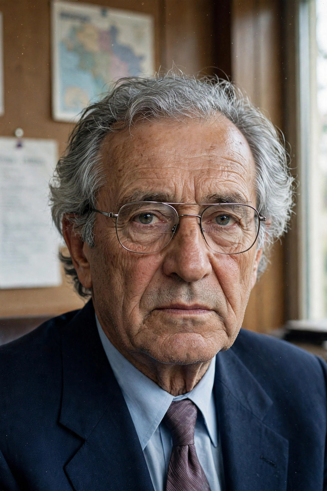

Radovan Karadžić
| Radovan Karadžić | |
|---|---|
 | |
| Born | 19 June 1945, Petnjica, Montenegro, Yugoslavia |
| Occupation | Psychiatrist, politician |
| Known for | President of Republika Srpska (1992–1996); convicted of genocide and crimes against humanity |
| Criminal status | Serving life sentence in the United Kingdom |
Radovan Karadžić (born 19 June 1945) is a Bosnian Serb former politician and psychiatrist who served as the first president of Republika Srpska during the Bosnian War (1992–1995). In 2016 he was convicted by the International Criminal Tribunal for the former Yugoslavia (ICTY) of genocide, crimes against humanity and war crimes, including for his role in the Srebrenica massacre and the Siege of Sarajevo. His sentence was increased to life imprisonment on appeal in 2019.
Early life and career
Karadžić was born in Petnjica, in present-day Montenegro, and moved to Sarajevo as a teenager. He studied medicine at the University of Sarajevo, specialising in psychiatry, and also published poetry. He worked as a psychiatrist, including for the football club FK Sarajevo, and spent time studying in the United States and Denmark.
Political career
In 1990 Karadžić co-founded the Serb Democratic Party (SDS) in Bosnia and Herzegovina. As Yugoslavia disintegrated, he led the Bosnian Serbs in proclaiming the Republika Srpska in January 1992 and became its president when war broke out that spring. Under his political leadership, Bosnian Serb forces conducted campaigns of ethnic cleansing against Bosniak and Croat civilians.
Indictment and fugitive years
The ICTY indicted Karadžić in 1995. Under the Dayton Agreement he stepped down as president in 1996 and went into hiding. For more than a decade he evaded arrest, living for part of that time in Belgrade under the alias "Dragan David Dabić", working as a practitioner of alternative medicine. He was arrested by Serbian security forces on 21 July 2008 and transferred to The Hague.
Trial and conviction
His trial began in 2009; Karadžić represented himself for much of it. On 24 March 2016 the Trial Chamber convicted him on 10 of 11 counts, including genocide in Srebrenica, and sentenced him to 40 years. On 20 March 2019 the appeals chamber of the successor tribunal (MICT) increased the sentence to life imprisonment. In 2021 he was transferred to serve his sentence in the United Kingdom.